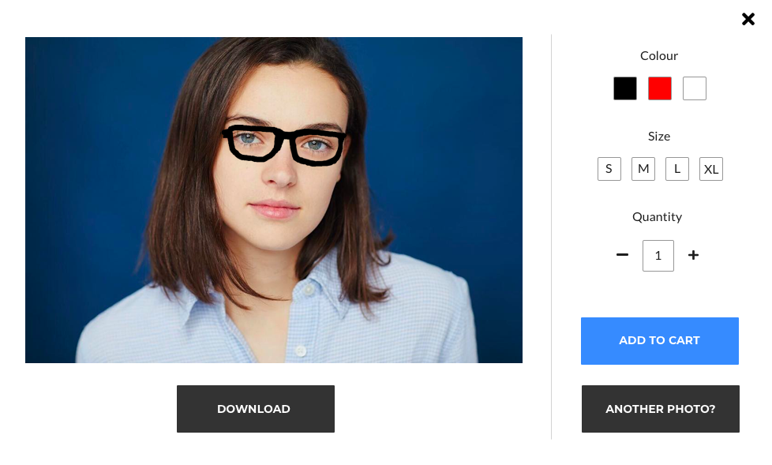
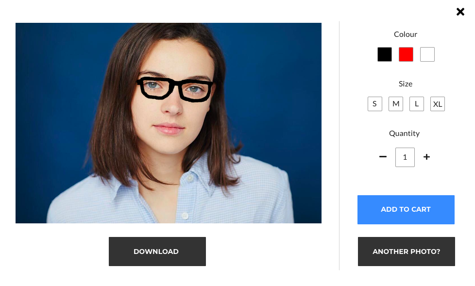

Web AR Wearables and Furnishings
About
Developed the UI/UX for face-tracking artificial intelligence and product AR preview on web (and mobile) browser; improving the user shopping experience by familiarizing the user with Augmented Reality features through conventional e-commerce UI trends they can easily learn.
Project length: 6 weeksNotice: Current iteration may not reflect these designs but are based on them.
AR Face UI View
As someone who wears glasses and likes to shop online, the ability to do both is extremely useful when it comes to trying on something with a more freeform fit like glasses. With Augmented Reality, we can combine artificial to face-tracking and facilitate the process for using AR that enhances the online shopping experience.
Well ... this is easy to use. Upon tapping the view in AR button on the product page, the consumer is first given a prompt to center their face towards the camera such that the AI tracking can identify the face and easily
place the glasses over their eyes. Options for colours are located on the left and a popup interface is depicting when tapped on. Tapping on the camera button in the center prompts an pop-up interface confirming if the user wants to keep, take another picture or buy the item. Cart
interface pop-up appears when the cart is tapped on to give the consumers the option to double check their specifications for their product and the obvious adding to cart.
UIs on the top reflect a use for a back option if the consumer wants to just view the product regularly or if battery concerns is a problem. Info button allows for instructions/navigation as on how to use and the camera flip; allows for face-tracking on a person in front of the person
using the technology for frontal face recognition instead.
Web Version
Web version allows for consumers to use this on larger devices (for those with cameras and not using their phones). Follows the same structure as the mobile version; only designed aesthetically for a larger screen.
 

AR Place It View
As a buyer having the ability to place an object, especially in a web browser via a mobile device, is incredibly impressive. With the ability to preview an object and see it potentially placed in a desired location, consumers now have the ability to potentially preview the item before having to buy the physical thing.
Onboarding
To start off, when using this experience, users will always be prompted for access for camera. This acts as a safety valve in the event that the user owns a device that is not compatible and are given a 3D viewer instead. The design follows a very similar design for mobile e-commerce applications on web but also makes use of design for camera apps, taking into account the need for UI tools to allow users to control their Augmented Reality objects in a easy and learnable way.

The UIs
The UI buttons consists of: brand, product name, back button, lock, canera, cart, and help. Although a back button is not required, it adds balance to screen and allows for a slightly more easily tap for backing as all the relevant UI elements are located near the bottom. For the lock button, this feature is used when placing the AR object in place. When starting the AR View, users can move around and the AR product moves with them. Once users are satisfied with where they want to place their object, they then can lock the object in its position and take a picture of it for future (or present) reference and decide on if they like the view of the product in a certain space. Also note the intended design with when the user takes a picture and the lock icon is on 'unlocked', taking a picture will lock the object as well, acting also as the lock item since in order to take a picture users must first lock the product.
The cart button, prompts a pop-up interface where the users are given the type of style they'd like on their product along with the option if they'd like to add the item to cart. Hitting the add to cart button will return the user back the item page before the AR view.
Taking a picture will prompt a pop-up interface giving the user the options to: download the image onto their device, take another image or simply add the item to cart which will return them to product page. And the help button simply just prompts the same onboarding instructions on how to use the interface.
Software